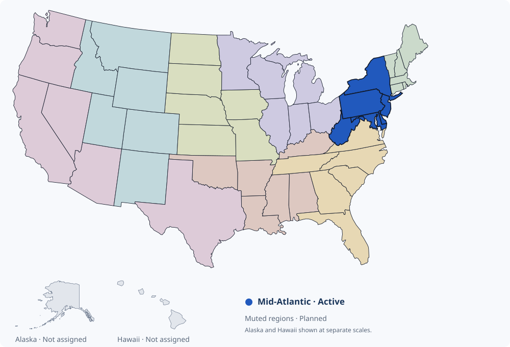

New England
PlannedMaine, New Hampshire, Vermont, Massachusetts, Rhode Island, Connecticut
SIM WRESTLING · HOW TO PLAY
Build a program. Find your next star. Make the calls that shape your college’s future.
Take charge of a college wrestling team, choose your starters and compete for the recruits who will carry your program forward.
YOUR FIRST STEPS
ONE WORLD · EIGHT REGIONS
The Mid-Atlantic is currently open for play. Seven additional regions show the planned shape of the national game; they are not yet available for coaching.

Maine, New Hampshire, Vermont, Massachusetts, Rhode Island, Connecticut
New York, New Jersey, Pennsylvania, Delaware, Maryland, West Virginia
Virginia, North Carolina, South Carolina, Georgia, Florida, Tennessee
Kentucky, Alabama, Mississippi, Louisiana, Arkansas, Oklahoma
Ohio, Michigan, Indiana, Illinois, Wisconsin, Minnesota
Iowa, Missouri, North Dakota, South Dakota, Nebraska, Kansas
Montana, Idaho, Wyoming, Colorado, Utah, New Mexico
Washington, Oregon, California, Nevada, Arizona, Texas
Alaska, Hawaii and the District of Columbia are not assigned to a region in the current game setup.
KNOW THE RHYTHM
Each game cycle runs for eight weeks, with college wrestling activities on Tuesday, Thursday and Saturday.
Use your college schedule to follow upcoming competitions. Review your lineup before future matches, scout prospects and plan your recruiting spending throughout the cycle.
At season rollover, next-season roster decisions take effect, graduating recruits are assigned to colleges through the signing process, and unused recruiting points expire.
MAKE THE LINEUP YOURS
Open Coaching → Team and choose Full Roster. Click a wrestler’s name to open his private profile, then use the roster controls to manage your program.
Choose Make Starter beside a backup and confirm the change. He replaces the current starter at that weight for future competitions. Completed results stay as played.
Schedule a backup against the starter at the same weight on the next league day. You may schedule up to five per team per in-game league day.
The result does not automatically change your lineup. Review the result and play-by-play, then decide whom to start.
Mark an eligible backup to move up a weight class next season. This is a roster-planning decision, rather than an immediate weight change. Heavyweights do not have a Move Up option.
Mark a backup for release at the next season rollover. He stays on the current roster until that decision is processed. Clear the selection if you change your plan before processing.
Move Up and Release are alternative decisions for a wrestler. Selecting one replaces the other. A scheduled wrestle-off may be canceled if its starter or roster eligibility changes before it runs.
BUILD YOUR BIG BOARD
Open Recruits → Search & Scout. Searching the high-school prospect inventory is free.
Combine the filters to find a specific wrestler or build a list around your roster needs. Open a prospect’s profile for a closer look, then choose Flag recruit or Add to Big Board to track him.
Your Big Board organizes recruiting targets. Review prospects there, follow your recruiting position and choose a top prospect at each weight. A flag helps organize your targets; persuasive recruiting actions are a separate step.
TURN INTEREST INTO A RECRUITING CLASS
Scouting purchases and persuasive recruiting actions share the same point balance. Unused points carry forward within the season. There is no separate weekly spending cap: you can spend any amount you have available. Points do not carry into the next season.
One action per recruit per week. You can recruit multiple prospects in a week as long as you have the points. Available actions depend on the prospect’s high-school grade.
| Action | Points | Available to | Use limit |
|---|---|---|---|
| Send Letter | 1 | All grades | Weekly action limit |
| Phone Call | 3 | Sophomores, juniors & seniors | Weekly action limit |
| Personal Coach Contact | 5 | Juniors & seniors | Weekly action limit |
| Attend Wrestler Match | 8 | Juniors & seniors | Once per high-school grade |
| Campus Visit | 12 | Seniors only | Once during senior year |
WATCH THE WRESTLING
Names and geography are free to search. Purchase result packages in Search & Scout when you want to evaluate tournament performance.
COUNTY LEVEL
Purchase a county tournament package covering all weight classes for one tournament day.
STATE · REGION · NATIONAL
Purchase one bracket for one weight class in one tournament at the state, regional or national level.
Filter packages by week or search by county, state or event. Review the displayed points cost, choose Unlock, then open View results. Use Purchased only to find packages you already own.
Purchased results let you review participants, open wrestler profiles and follow available match play-by-play. Use that information to decide which prospects deserve your recruiting points.
LET YOUR ROSTER BUILD CONNECTIONS
Your pipelines come from the hometowns of wrestlers on your college roster. A recruit benefits when your program already has wrestlers from his region, state or county. These connections are counted together.
Recruiting wrestlers from an area builds your roster’s representation there and can strengthen that pipeline for future recruiting. Review Pipeline Strength in Search & Scout to see the region, state and county counts used by your program.
A SIMPLE EXAMPLE
20 wrestlers from a recruit’s region, including 5 from his state and 1 from his county:
(20 × 0.05%) + (5 × 0.10%) + (1 × 0.50%) = 2%That gives a 2% boost to signing weight. It does not add spendable recruiting points or two percentage points to a signing probability.
RECRUIT EARLY · STAY IN THE RACE
Before entering their senior year, high-school juniors select their top college choices. During senior year, only those colleges can continue recruiting them.
Recruiting effort shapes your program’s position. Pipeline connections can improve your signing weight, while roster space also matters when colleges are selected at season rollover.
A recruit considers eligible colleges through a weighted signing process. A stronger position can help, but leading the race is not a guaranteed signing. Use the senior outlook on your Big Board to follow the schools being considered and your estimated chance.
FOLLOW THE LEAGUE’S STORIES
Every program has a story. Follow the ones unfolding around yours.
The SimWrestle Post is the game’s media outlet, covering the wrestling world through reporting, recruiting analysis and commentary. Read about programs, prospects and recruiting classes to put your own college’s progress in context.
Its coverage helps coaches discover stories and evaluate the wider league alongside the schedules, results and scouting tools they use to run their teams.
READY TO GET STARTED?